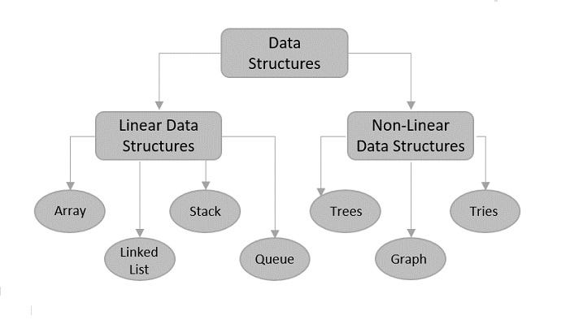

A data structure is not only used for organizing the data. It is also used for processing, retrieving, and storing data. Different basic and advanced types of data structures are used in almost every program or software system that has been developed. So we must have good knowledge of data structures. Data structures are an integral part of computers used for the arrangement of data in memory. They are essential and responsible for organizing, processing, accessing, and storing data efficiently. But this is not all. Various types of data structures have their characteristics, features, applications, advantages, and disadvantages. So how do you identify a data structure that is suitable for a particular task? What is meant by the term ‘Data Structure’? How many types of data structures are there and what are they used for?

We have got you covered. We have made a complete list of everything about what data structure is, what are the types of data structures, the classification of data structures, the applications of each data structure, and so on. In this article, we will discuss every aspect of each data structure to help you choose the best one in just minutes.